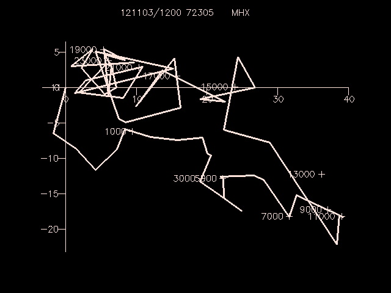

SNHODO draws a hodograph which represents the vertical
distribution of the horizontal wind at a station. The winds
are plotted in meters/sec.
Plot the MHX (Newport, North Carolina) hodograph using height coordinates.
Label every 2000 meters from 1000 meters to
24000 meters.
GEMPAK-SNHODO>
SNFILE = uair
AREA = @mhx
LINE = 1//3
MARKER = 1
BORDER = 1
TITLE = 1
XAXIS =
YAXIS =
LEVELS = 1000-24000-2000
VCOORD = hght
DATTIM = 1200
CLEAR = y
DEVICE = xw
PANEL = 0
TEXT = 1/2/1/hw
GEMPAK-SNHODO>r
